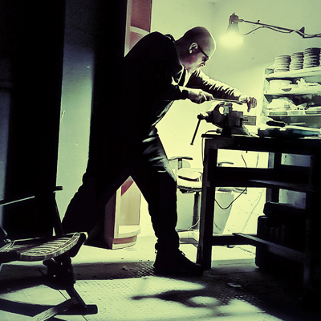
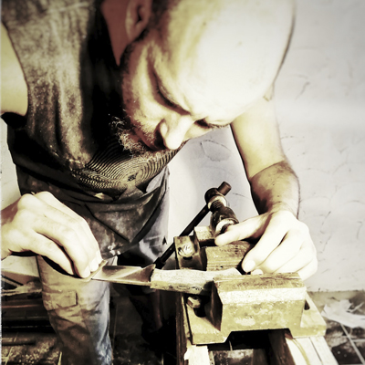

Por más de 70 años la familia Fraser a fabricado cuchillos. Tres generaciones aportaron su impronta y esfuerzo para lograr un producto artesanal que destaca por su calidad y belleza.

Para Cuchillos Egregius he decidido inspirarme en el trabajo de mi familia,respetando los estándares de calidad y aportando nuevos diseños y materiales para adaptar los cuchillos a los tiempos modernos.

Cuchillos Egregius ofrece un catálogo de diseños exclusivos y únicos como también diseños clásicos. Todos los cuchillos Egregius están fabricados a mano,respetando la función y el propósito del cuchillo.
